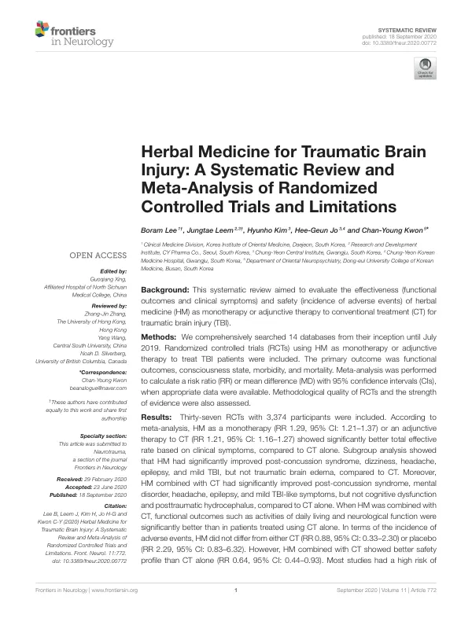

Herbal Medicine for Traumatic Brain Injury: A Systematic Review and Meta-Analysis of Randomized Controlled Trials and Limitations
Lee B, Leem J, Kim H, Jo HG, Kwon CY
Frontiers in Neurology 11:772

첫 장 · 오픈액세스First page · open access
논문 소개Summary
외상성 뇌손상은 외부의 힘이 뇌의 기능이나 구조를 바꾸어 놓는 것으로, 사망과 입원의 중요한 원인입니다. 한약이 급성기 관리와 재활에 쓰이지만 그 효과와 안전성을 한자리에 모아 본 적은 없었습니다. 이 문헌고찰은 열네 개 데이터베이스를 2019년 7월까지 훑어 한약을 단독으로 혹은 기존 치료에 더해 쓴 무작위 대조시험을 모았습니다.
무작위 대조시험 37편, 참여자 3,374명이 들어갔습니다. 일차 결과는 기능적 예후와 의식 상태, 이환율, 사망률로 잡았고 이차로 삶의 질과 이상반응, 총유효율을 보았습니다. 메타분석에서 한약 단독은 기존 치료 단독에 견주어 총유효율이 높았고(위험비 1.29), 기존 치료에 한약을 더한 경우도 그랬습니다(위험비 1.21).
그러나 하위군으로 나누면 그림이 갈립니다. 한약은 뇌진탕후증후군과 어지럼, 두통, 뇌전증, 경증 외상성 뇌손상에서는 나았지만 외상성 뇌부종에서는 그렇지 않았습니다. 기존 치료에 더한 경우에도 뇌진탕후증후군과 정신장애, 두통, 뇌전증, 경증 증상에서는 나았으나 인지기능장애와 외상후 수두증에서는 차이가 없었습니다. 이상반응 발생률은 한약이 기존 치료와도(위험비 0.88), 위약과도(위험비 2.29) 다르지 않았습니다. 다만 기존 치료에 한약을 더한 쪽이 기존 치료 단독보다 안전성 지표가 나았습니다(위험비 0.64).
숫자가 좋아 보여도 결론은 그 반대입니다. 대부분의 연구가 수행 비뚤림의 위험이 높았고, 근거의 수준은 대체로 「매우 낮음」에서 「보통」에 머물렀습니다. 포함된 연구의 비뚤림 위험이 높은 데다 정량적 합성 결과가 정밀하지 않았기 때문입니다.
그래서 저자들은 현재의 근거로는 외상성 뇌손상에 한약을 권고할 수 없다고 결론지었습니다. 총유효율이라는 지표 자체가 무엇을 재는지 불분명한 결과변수라는 점도 이 판단의 배경에 있습니다. 논문 제목에 「그리고 한계」라는 말이 붙어 있는 것이 이 고찰의 성격을 그대로 보여 줍니다. 효과를 주장하려고 모은 것이 아니라 무엇이 부족한지를 세어 보려고 모은 것입니다.
Traumatic brain injury — an alteration of brain function or structure caused by external force — is a major cause of death and hospitalisation. Herbal medicine is used in its acute management and rehabilitation, but the effectiveness and safety of that use had never been assembled in one place. This review searched fourteen databases through July 2019 for randomised controlled trials using herbal medicine as monotherapy or as an adjunct to conventional treatment.
Thirty-seven randomised controlled trials with 3,374 participants were included. Primary outcomes were functional outcome, consciousness state, morbidity and mortality; secondary outcomes were quality of life, adverse events and total effective rate. In meta-analysis, herbal medicine as monotherapy showed a better total effective rate than conventional treatment alone (risk ratio 1.29), as did herbal medicine added to conventional treatment (risk ratio 1.21).
Split into subgroups, however, the picture divides. Herbal medicine improved post-concussion syndrome, dizziness, headache, epilepsy and mild traumatic brain injury, but not traumatic brain oedema. Added to conventional treatment it improved post-concussion syndrome, mental disorder, headache, epilepsy and mild symptoms, but made no difference to cognitive dysfunction or post-traumatic hydrocephalus. Adverse event rates for herbal medicine differed neither from conventional treatment (risk ratio 0.88) nor from placebo (risk ratio 2.29); herbal medicine added to conventional treatment did show a better safety profile than conventional treatment alone (risk ratio 0.64).
Favourable as the numbers look, the conclusion runs the other way. Most studies carried a high risk of performance bias, and the quality of evidence was mostly rated "very low" to "moderate" — because the included studies were at high risk of bias and the quantitative syntheses were imprecise.
The authors therefore conclude that current evidence is insufficient to recommend herbal medicine for traumatic brain injury in practice. That the total effective rate is itself an outcome of unclear content lies behind this judgement. The phrase "and Limitations" in the paper's own title states its character exactly: it was assembled not to argue for an effect but to count what is missing.
인용Cite
Lee B, Leem J, Kim H, Jo HG, Kwon CY. Herbal Medicine for Traumatic Brain Injury: A Systematic Review and Meta-Analysis of Randomized Controlled Trials and Limitations. Frontiers in Neurology. 2020;11:772. doi:10.3389/fneur.2020.00772